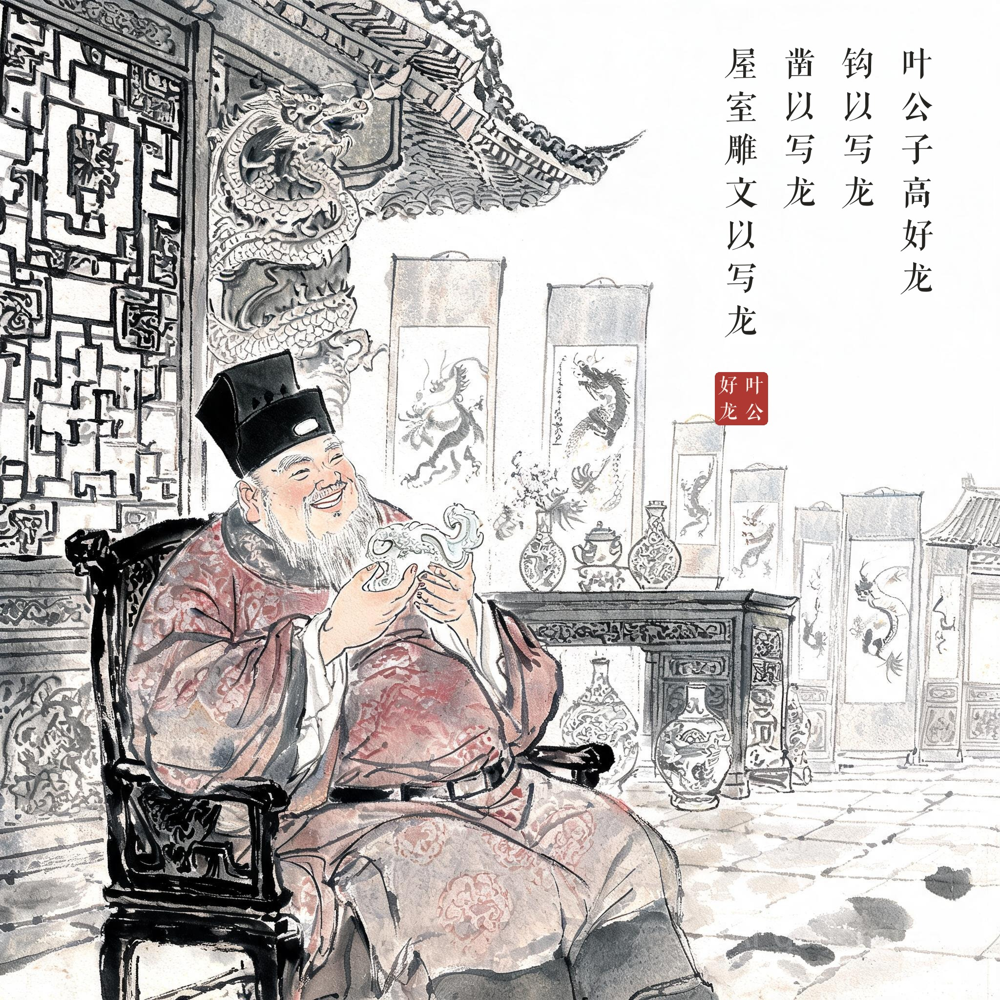
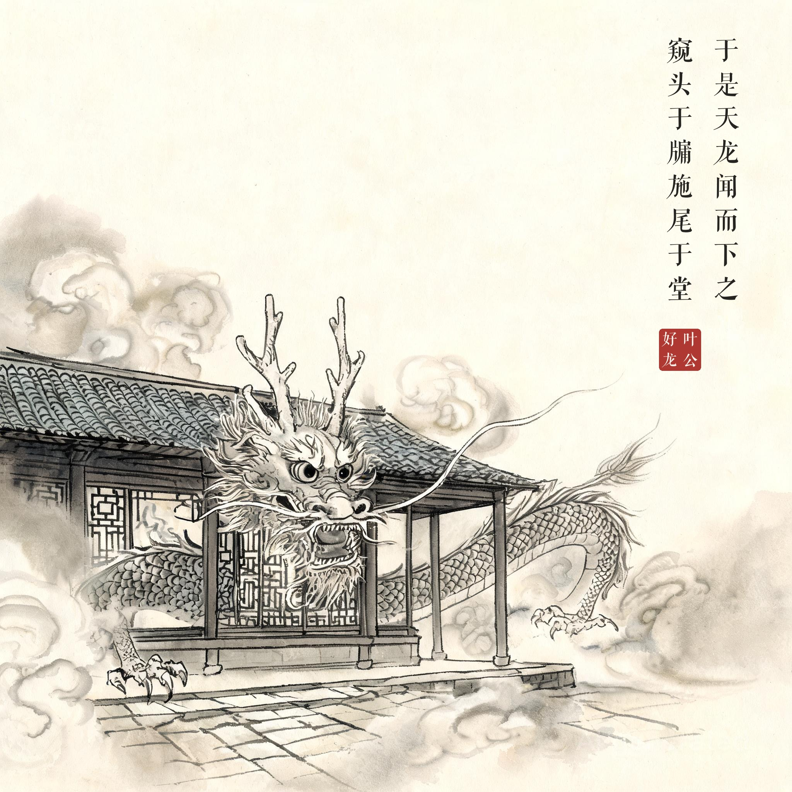
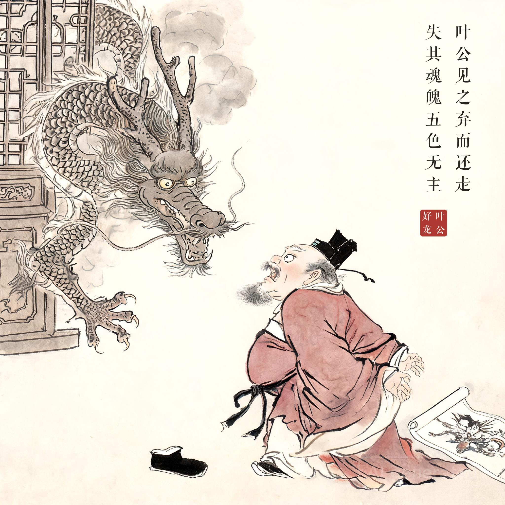
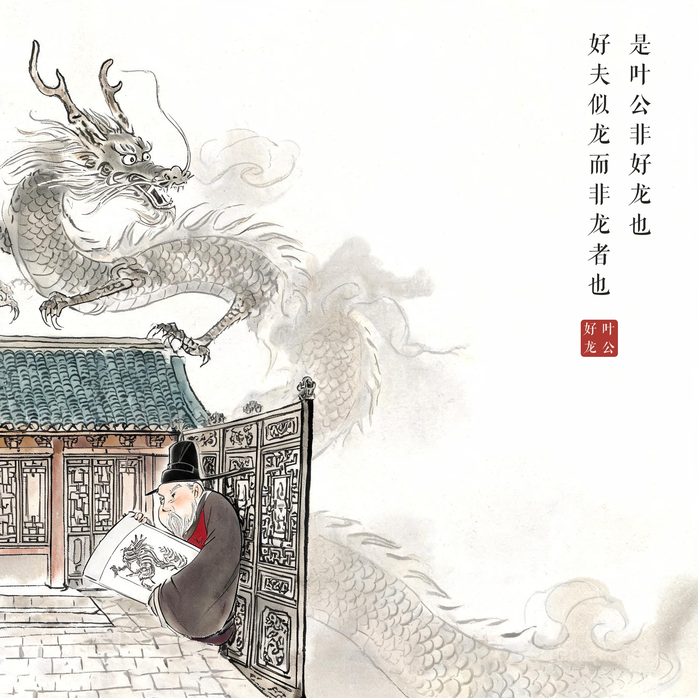

成语故事 · 水墨组画
01 叶公好龙
系列：成语故事 · 水墨组画 | 画幅：2K（2048×2048）| 模型：aicloud-seedream / 依据原文拆为 4 幅独立的画，每幅右上角竖排合成该幕原文题款（方正清刻本悦宋，无标点），钤朱红印章"叶公好龙"，画文互证。

其01 · 叶府饰龙叶公子高好龙，钩以写龙，凿以写龙，屋室雕文以写龙
叶府处处皆龙，叶公把玩雕龙玉钩

其02 · 天龙下凡于是天龙闻而下之，窥头于牖，施尾于堂
真龙闻讯降临，探首于窗、曳尾于堂

其03 · 弃而还走叶公见之，弃而还走，失其魂魄，五色无主
叶公魂飞魄散，弃鞋奔逃；龙自左侧门窗探首

其04 · 似龙非龙是叶公非好龙也，好夫似龙而非龙者也
真龙腾云回首欲去，叶公倚门框展开假龙画稿被真龙盯住
原文
叶公子高好龙，钩以写龙，凿以写龙，屋室雕文以写龙。于是天龙闻而下之，窥头于牖，施尾于堂。叶公见之，弃而还走，失其魂魄，五色无主。是叶公非好龙也，好夫似龙而非龙者也。
注释
- 叶公：沈诸梁，字子高，春秋时期楚国叶邑令尹，僭称"公"
- 钩：衣带钩；凿：饮器；写：刻画、画
- 牖（yǒu）：窗户；施（yì）：延伸、拖曳
- 五色无主：脸色青红不定，惊恐失态
白话译文
叶公子高酷爱龙，衣带钩上刻着龙，饮具上画着龙，房屋的雕梁画栋上也满是龙。天上的真龙听说他如此爱龙，便降临到叶公家里，龙头搭在窗台上探望，龙尾伸进了厅堂。叶公一见真龙，转身就跑，吓得魂飞魄散、脸色变幻、六神无主。由此看来，叶公并非真的爱龙——他爱的，只是那些像龙而并不是龙的东西罢了。
寓意
讽刺口头上宣称爱好某事物、实际并非真正爱好、甚至心怀畏惧的人：爱好停留在表面与假象，一旦见到真实的对象便原形毕露。常用来批评"表里不一""名不副实"的追捧与喜好。